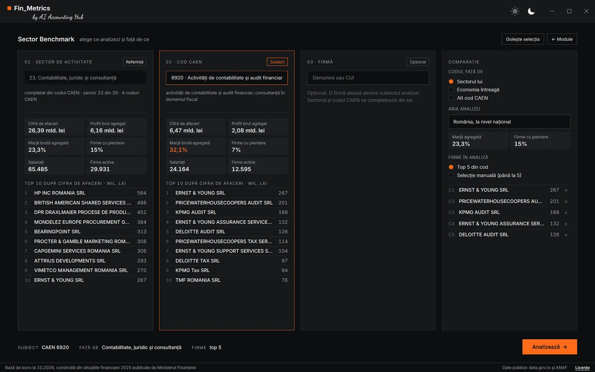
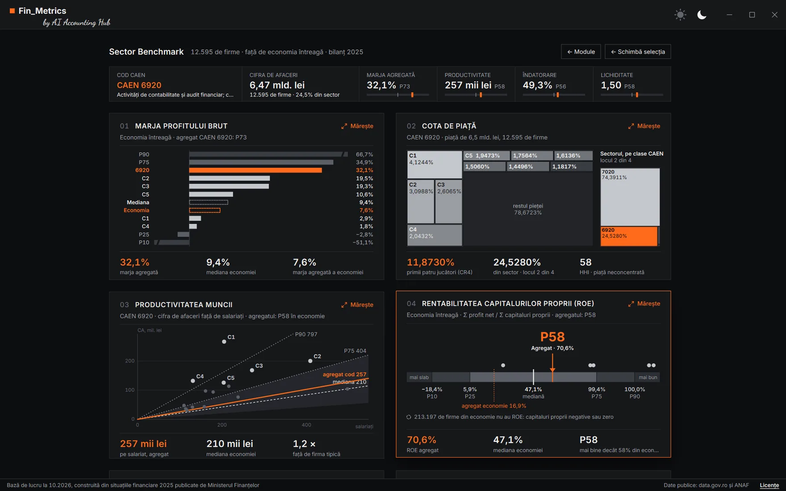
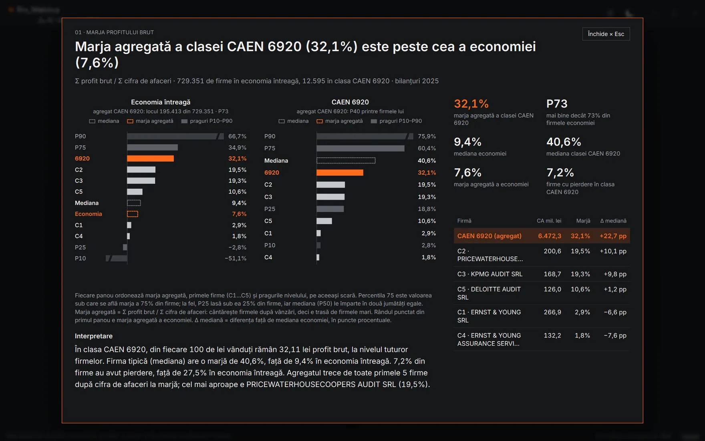
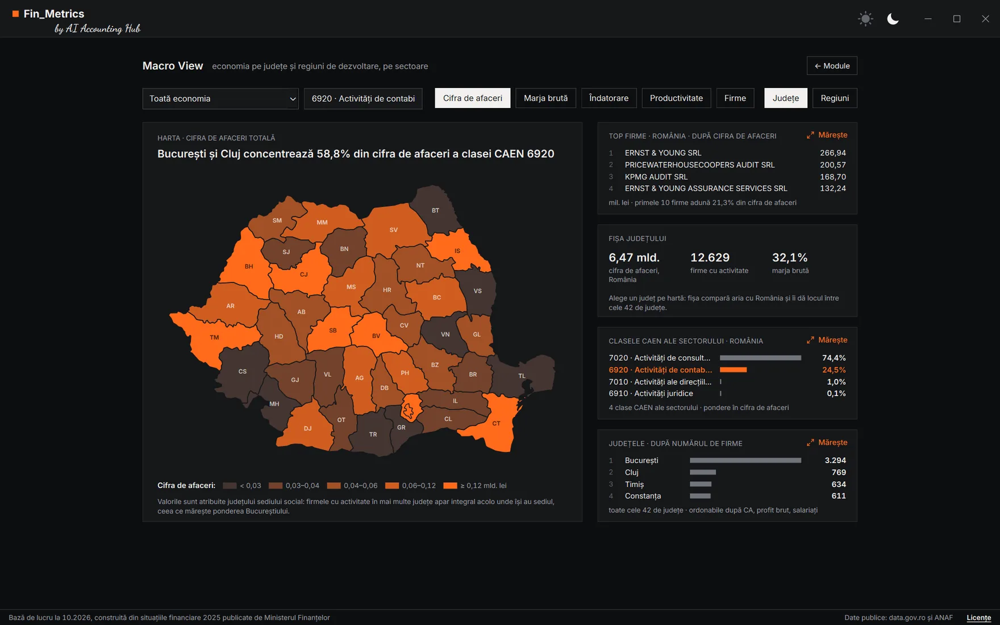
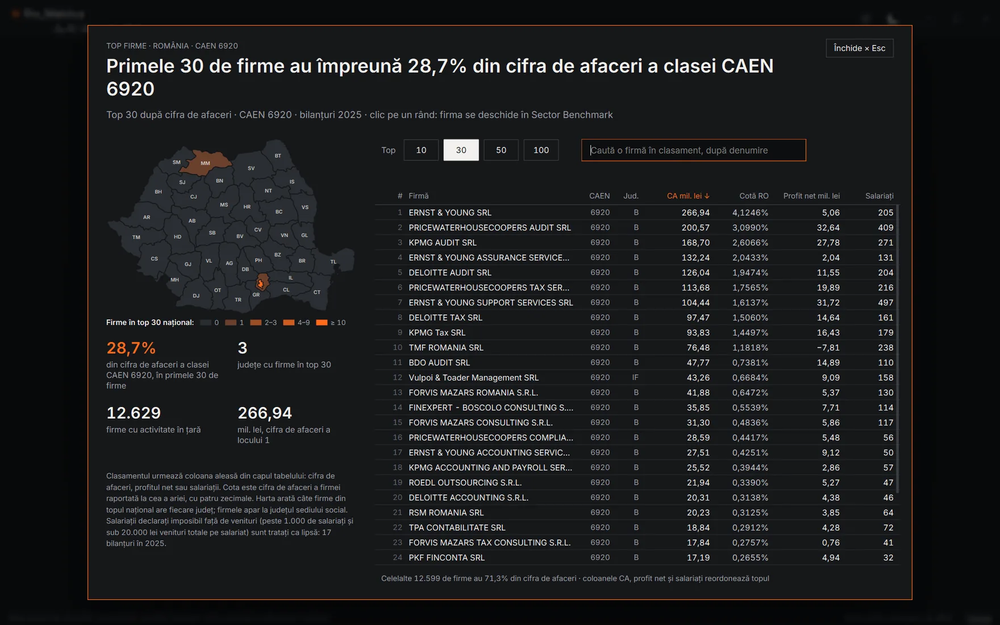
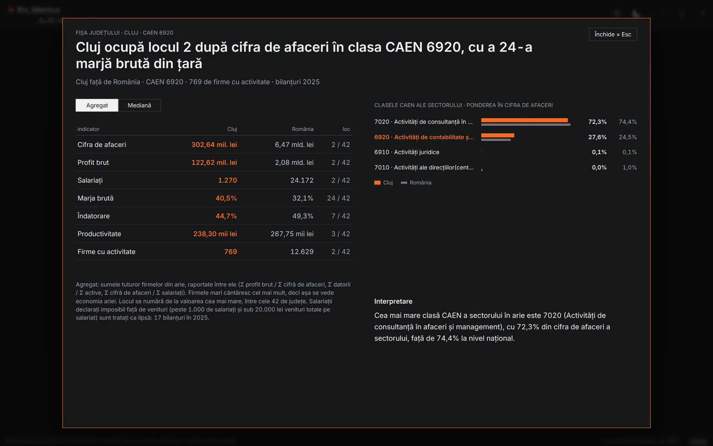
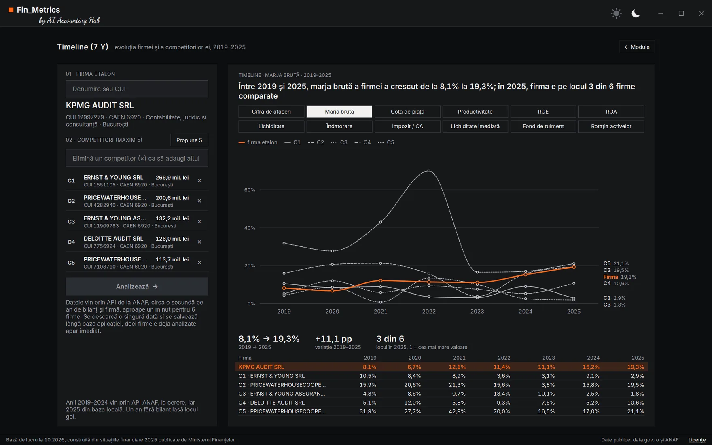

Marja firmei față de sector, înainte să întrebe ANAF
ANAF compară marja firmei cu reperul sectorului și trimite notificări de conformare când diferența e mare. Am vrut să putem face aceeași comparație înaintea lui, pe date publice. Așa a apărut Fin_Metrics, construit în primul rând pentru uz intern, pentru fiecare dintre noi care vrea să vadă aceste cifre. Aplicația pune bilanțurile 2025 ale firmelor românești într-un singur fișier de 60 MB. O punem la dispoziția oricui, dar doar ca exemplu: recomandarea noastră rămâne ca fiecare să-și construiască propriile instrumente, după cazurile lui. Mai jos, drumul prin ecosistemul Gemini de la Google, de la un raport Deep Research la executabil, ce date folosește, ce arată și unde poate greși.
// Cuprins
Notificarea care compară marja cu sectorul
Punctul de plecare a fost o postare LinkedIn. Adrian Luca, de la Transfer Pricing Services, scria în septembrie că mii de companii au primit notificări de conformare legate de diferența dintre marja lor de profit și media națională a codului CAEN. Mecanismul descris e simplu: ANAF comunică o marjă medie pe CAEN, o aplică la cifra de afaceri a firmei și obține un profit de referință. Diferența dintre acest profit și cel declarat devine întrebarea la care firma trebuie să răspundă.
Același mesaj, mai pe larg, e în articolul dedicat de pe site-ul TPS. Autorul critică metodologia: o medie națională pe CAEN pune laolaltă firme de mărimi, modele de afaceri și regiuni foarte diferite, fără analiza de comparabilitate pe care o cere orice studiu de prețuri de transfer. Recomandarea lui e să nu răspundeți în grabă și să documentați explicațiile economice ale diferenței.
Numărul de „mii” de destinatari rămâne afirmația autorului: în postarea publică nu era atașată o notificare anonimizată. Ce se poate verifica e altceva: tema nu e nouă.
Nu e prima dată: 2024 și raportul ANAF
În februarie 2024, un utilizator al forumului Avocatnet reproducea conținutul unei notificări primite de la AJFP Satu Mare, pentru anul 2022. Firma, din CAEN 4120 (construcții de clădiri), avea o marjă de 3,86%. Marja de referință, calculată pentru contribuabilii arondați aceleiași administrații, era 15,28%. Notificarea indica un impozit pe profit suplimentar de 73.600 lei. Reperul era deci o medie locală, nu națională, iar tipul de profit folosit nu era precizat. În aceeași lună, HotNews discuta notificările de conformare și medianele de profitabilitate pe industrii, pe baza intervențiilor unor specialiști la TaxEU Forum.
Documentul oficial vine un an mai târziu. Raportul de activitate ANAF pentru semestrul I 2025, la pagina 21, enumeră printre indicatorii de risc în dezvoltare: marja profitului operațional (EBIT) inferioară medianei marjei profitului operațional pe domeniu de activitate. Raportul nu publică formula și nici nu spune câte notificări a declanșat indicatorul.
| Perioada | Notificări de conformare | Riscuri estimate |
|---|---|---|
| Semestrul I 2024 | 9.439 | 3,35 mld. lei |
| Anul 2024 | 15.432 | 4,64 mld. lei |
| Semestrul I 2025 | 6.660 | 839,54 mil. lei |
| Anul 2025 | 14.545 | 2.311,34 mil. lei |
| Semestrul I 2026 | 2.729 | 255,14 mil. lei |
Cifrele din tabel vin din rapoartele de activitate ANAF și sunt totaluri generale ale notificărilor de conformare, pentru toate tipurile de risc. Nu sunt notificări despre marja de profit. Riscurile estimate nu sunt nici obligații stabilite, nici sume încasate.
Trei lucruri trebuie ținute separat când citiți o asemenea notificare: media nu e mediana (câteva firme foarte profitabile trag media în sus, mediana nu se mișcă), profitul net nu e EBIT, iar reperul național nu e unul local. Nu putem demonstra că notificarea din 2024, indicatorul din 2025 și notificările descrise în 2026 folosesc aceeași formulă sau aceeași populație de comparație.
Întrebarea noastră
Nu am primit o asemenea notificare și nici nu am văzut una anonimizată postată pe net. Dar întrebarea a rămas: cum aflăm, înainte să vină ANAF să ne întrebe, unde se situează marja noastră față de sector, față de codul CAEN sau față de toată economia? Pentru un contabil, răspunsul ar trebui să fie la un click distanță, nu un proiect de o săptămână.
Am strâns într-un sumar ce s-a putut verifica despre notificări: postările, cazurile de pe forumuri, rapoartele ANAF și diferența dintre EBIT, profitul brut și profitul net. Apoi am trecut la partea practică: de unde iau cifrele celorlalte firme.
Deep Research cu Gemini
De data aceasta am dat o șansă ecosistemului Google. Am cerut Gemini (gemini.google.com), în modul Deep Research, un raport despre opțiunile de a obține și analiza bilanțurile firmelor românești pe cod CAEN: ce surse oficiale există, cât costă, ce oferă platformele private și ce se poate automatiza. Raportul a venit ca document Word, cu sursele citate. Pe scurt, iată ce conținea:
- Nu există o căutare inversă oficială, de la un cod CAEN la lista firmelor. Serviciile publice primesc un CUI și întorc date despre acea firmă, nu invers.
- ONRC vinde rapoarte, dar costul crește repede: un raport istoric despre o firmă e în jur de 250 de lei, iar statisticile se taxează pe criteriu și pe firmă. Pentru un sector întreg nu e o soluție.
- Datele deschise ale Ministerului Finanțelor sunt soluția gratuită optimă. Situațiile financiare anuale se publică pe data.gov.ro, cu indicatorii din bilanț pentru fiecare firmă și cu codul CAEN declarat.
- Platformele private fac deja aceste analize, contra cost: Targetare, ListaFirme, DateFirma, TotalFirme sau Scrap.io, cu abonamente de la câteva zeci de euro pe lună. Pentru acces programatic, raportul menționa OpenAPI.ro, Termene.ro și AnalizaFiscala, cu pachete gratuite mici și planuri plătite.
- API-urile ANAF au limite: o cerere pe secundă, răspunsuri a căror structură se poate schimba, autentificare pentru serviciile extinse și niciun serviciu care să întoarcă agregate pe sector.
- Arhitectura propusă avea trei straturi: o bază locală cu datele descărcate o dată, un strat care pune în cache răspunsurile API și o interfață de analiză deasupra.
Partea cea mai utilă a fost trimiterea la data.gov.ro. Restul raportului a confirmat că piața există și că se plătește, deci o aplicație internă pe date publice are sens.
Datele publice de pe data.gov.ro
data.gov.ro e portalul național de date deschise. Instituțiile publice încarcă acolo seturi de date în formate prelucrabile (CSV, TXT, XLSX), sub licența Creative Commons Attribution 4.0, care permite reutilizarea cu mențiunea sursei. Pentru aplicație au contat trei seturi:
| Set de date | Cine publică | Ce aduce |
|---|---|---|
| Situații financiare 2025 | Ministerul Finanțelor | 20 de indicatori din bilanț pentru fiecare firmă (active, datorii, capitaluri, cifră de afaceri, venituri, cheltuieli, profit, salariați) și codul CAEN declarat; în fișiere separate pentru bilanțul complet, micro și mici, IFRS |
| Firme înregistrate la Registrul Comerțului | ONRC | denumire, CUI, formă juridică, adresă, starea firmei și toate codurile CAEN autorizate |
| Nomenclatoare | ONRC | decodificarea stărilor firmei și a codurilor CAEN, pe toate versiunile |
Extrasele publice din situațiile financiare sunt reglementate de Ordinul MF nr. 1.420/2021. Sunt prescurtate: 20 de indicatori, nu bilanțul și contul de profit și pierdere complete.
Pe hârtie, datele sunt acolo. În practică, lucrul cu ele e greu. Fișierele ONRC au peste 4 milioane de firme și aproape 20 de milioane de rânduri de coduri CAEN autorizate, separate prin caracterul ^. Legătura cu bilanțurile se face prin CUI, iar ONRC lucrează cu numărul de înmatriculare. Registrul nu spune care cod CAEN e cel principal. Iar volumul depășește ce poate deschide Excel, care se oprește la 1.048.576 de rânduri pe foaie. Cu alte cuvinte, nu e o sarcină pentru un tabel pivot.
Serviciile web ANAF
Al doilea pas cu Gemini a fost o discuție despre o aplicație dedicată, în Python, și despre serviciile ANAF care pot completa fișierele. Pe pagina serviciilor web ANAF sunt publice, fără autentificare, două servicii utile aici:
| Serviciu | Cum se cere | Ce aduce | Ritm |
|---|---|---|---|
| Registrul plătitorilor de TVA (v9) | POST, o listă de CUI-uri | codul CAEN principal, starea la ANAF, inactiv fiscal | până la 100 de CUI pe cerere, o cerere pe secundă |
| Serviciul de bilanț | GET, câte un CUI și un an | aceiași 20 de indicatori ca în fișierele MF, din 2019 încoace | o firmă și un an pe cerere, o cerere pe secundă |
Diferența dintre ele e de ordin de mărime. Registrul TVA primește o listă de 100 de coduri fiscale într-o singură cerere, deci trece prin câteva mii de firme pe minut. Serviciul de bilanț e o cerere simplă de tip GET, cu un singur CUI și un singur an, pentru câteva mii de bilanțuri poate dura ore întregi. Pentru aplicație, asta a dus la o regulă: bilanțul 2025 vine din fișier, iar API-ul de bilanț se folosește doar la cerere, pentru puține firme.
Cererea de bilanț se poate lipi direct în bara de adrese a browserului. Exemplul folosește OMV Petrom (CUI 1590082), firma cu cea mai mare cifră de afaceri din 2025:
https://webservicesp.anaf.ro/bilant?an=2025&cui=1590082
Răspunsul vine în format JSON: denumirea, codul CAEN și cei 20 de indicatori, fiecare cu valoarea lui. Codul CAEN apare ca 610, fără zeroul din față. Corect e 0610, extracția petrolului brut, și e unul din detaliile care trebuie corectate la prelucrare.
Registrul TVA nu se poate interoga din browser, pentru că primește cererea prin POST, cu lista de coduri fiscale în corpul ei. Din PowerShell, pe orice calculator cu Windows, arată așa:
$r = Invoke-RestMethod -Method Post `
-Uri "https://webservicesp.anaf.ro/api/PlatitorTvaRest/v9/tva" `
-ContentType "application/json" `
-Body '[{"cui":1590082,"data":"2026-10-24"}]'
$r.found[0].date_generale | Select-Object cui, denumire, cod_CAEN, stare_inregistrare
Lista din -Body poate avea până la 100 de perechi formate din CUI și dată, iar răspunsul aduce pentru fiecare firmă codul CAEN principal, starea la ANAF și datele de înregistrare în scopuri de TVA.
Ce vrem să vedem: indicatorii
Înainte de orice ecran am stabilit ce întrebări trebuie să primească răspuns. Contabilul vrea să știe dacă marja firmei e la nivelul sectorului. Antreprenorul vrea să știe cât de mare e față de competitori și cine sunt ei. Consultantul vrea aceleași cifre pe județ. Toate trebuie să se poată spune într-o frază, de felul „marja firmei (8,1%) e sub mediana codului CAEN (12,4%)”.
Din cele 20 de informații publice din bilanț se pot calcula mai mulți indicatori, noi am ales 14 dintre ei. Alți indicatori din cei consacrați cer date care nu sunt în bilanțul prescurtat: amortizarea, dobânzile, cheltuielile cu personalul, datoriile separate pe scadență.
| Grupa | Indicatori | Ce întrebare acoperă |
|---|---|---|
| Profitabilitate | marja brută, ROE, ROA, impozitul raportat la cifra de afaceri | câți bani rămân din vânzări și din capital |
| Poziție pe piață | cota de piață în țară și în județ, productivitatea pe salariat, clasa de mărime | cât de mare e firma și cât de eficient lucrează |
| Echilibru financiar | lichiditatea generală și imediată, îndatorarea, autonomia, fondul de rulment | cât de sigur își plătește datoriile |
| Eficiență | rotația activelor, structura activelor | cât vinde pe fiecare leu investit și unde stau banii |
Toate comparațiile se fac pe mediane și percentile, nu pe medii. Distribuția e foarte asimetrică: 14% din firmele cu bilanț complet au cifra de afaceri zero, iar 1% depășesc 336 de milioane de lei. O medie pe asemenea date nu descrie nicio firmă reală.
De la machete la MVP: Stitch și AI Studio
Pasul 2: machetele în Stitch
Cu indicatorii stabiliți, am cerut machetele ecranelor în Stitch (stitch.withgoogle.com), unealta de design a Google care generează interfețe din descrieri în limbaj natural. Rezultatul nu a fost o aplicație, ci identitatea ei: paleta, tipografia, felul în care arată o casetă de indicator și cum se așază ecranele.
Pasul 3: MVP-ul în Google AI Studio
Identitatea din Stitch și detaliile tehnice din discuțiile cu Gemini (sursele, serviciile, indicatorii) au intrat apoi în Google AI Studio (aistudio.google.com). Față de uneltele clasice de programare, AI Studio are un avantaj important la început: codul generat rulează direct în mediul lui, iar aplicația apare pe loc în fereastră. Nu instalezi nimic, nu configurezi un mediu Python, vezi imediat dacă ideea arată cum ți-ai imaginat-o. Pentru un prim MVP, o versiune minimă care demonstrează că ideea merge, e cel mai scurt drum.
Pasul 4: aplicația, pe calculatorul propriu
După MVP, proiectul trebuie mutat într-un mediu care lucrează cu fișierele de pe disc: Google Antigravity (antigravity.google), Claude Code, ChatGPT Codex sau orice alt asistent de programare care rulează local. Noi am continuat în Claude Code, același mediu în care a fost construit SAF-T Inspector.
Construcția aplicației
Prima parte nu a fost interfața, ci datele. Am pornit de la o hartă a fișierelor: ce conține fiecare, cum se leagă, ce cheie folosește. Câteva lucruri au ieșit la iveală abia aici:
- Bilanțurile sunt în trei fișiere, nu într-unul: bilanț complet (74.025 de firme), micro și mici (844.207) și IFRS (102, printre care OMV Petrom și Salrom).
- „Activă” trebuie definit. O firmă poate avea mai multe stări simultan la ONRC, de exemplu în funcțiune și cu sediul expirat. Regula aleasă: în funcțiune și neradiată. PFA, II și IF nu depun bilanț, deci se scot înainte de comparație.
- Codul CAEN din bilanțurile 2025 e un amestec de Rev.2 și Rev.3. 23% din firme declară un cod care există doar în Rev.2, iar unele coduri au același număr și sens diferit în cele două versiuni: 4791 era comerț online, acum e intermediere în comerțul cu amănuntul. Conversia s-a făcut cu tabelul de corespondență INS, cu codurile autorizate la ONRC, cu registrul ANAF și cu codul din bilanțul 2024, ca a doua sursă.
- Unele bilanțuri lipsesc din fișiere. Fișierele MF sunt extrase la o dată fixă. Prin serviciul de bilanț ANAF au mai fost găsite 41.910 bilanțuri, depuse ulterior, printre ele ale unor firme mari.
| Ce intră | Mărime |
|---|---|
| Fișierele ONRC (firme, stări, coduri CAEN autorizate, nomenclatoare) | 1.217 MB |
| Situațiile financiare MF 2025 (bilanț complet, micro și mici, IFRS) | 88 MB |
| Situațiile financiare MF 2024 (doar pentru codul CAEN) | 92 MB |
| Răspunsurile API ANAF (592.086 de răspunsuri TVA, 41.910 bilanțuri) | 94 MB |
| Total date folosite | circa 1,5 GB |
Baza livrată cu aplicația (date_2025.parquet)de circa 25 de ori mai mică decât datele din care a fost construită | 60 MB |
Baza finală are 1.393.893 de firme și 960.244 de bilanțuri. Înainte să fie acceptată, trece prin 32 de controale automate: numărul de rânduri, unicitatea CUI, fiecare bilanț comparat câmp cu câmp cu tabelele din care s-a construit, sumele de control pe toți cei 20 de indicatori și două eșantioane, unul de 5.000 de firme față de fișierele MF brute și unul de 2.000 față de răspunsurile API salvate.
Bibliotecile, și de ce acestea
| Componentă | La ce folosește |
|---|---|
| Python 3.14 | limbajul aplicației și al prelucrării datelor |
| DuckDB | o bază de date analitică într-un singur fișier de bibliotecă, fără server; citește CSV-urile mari și fișierele Parquet direct și calculează mediane și percentile pe aproape un milion de bilanțuri în fracțiuni de secundă |
| Parquet, cu compresie zstd | formatul bazei livrate: stochează datele pe coloane, deci se comprimă foarte bine și se citește doar ce e nevoie |
| PySide6 (Qt) | fereastra aplicației și toate graficele, desenate direct, fără browser și fără bibliotecă de grafice |
| Nuitka | îl compilează într-un singur executabil Windows |
Parquet e motivul pentru care 1,5 GB de date de intrare devin 60 MB. Fișierul nu păstrează tot ce era în surse, ci doar coloanele de care are nevoie aplicația, iar valorile unei coloane seamănă între ele (același județ, aceeași formă juridică, mii de zerouri), deci se comprimă de zeci de ori. Același conținut, salvat în CSV, ar avea peste 220 MB. Arhivarea ZIP nu mai câștigă aproape nimic, pentru că Parquet e deja comprimat.
Aplicația, pe codul CAEN 6920
Ca exemplu am ales, firește, chiar sectorul nostru: CAEN 6920, activități de contabilitate și audit financiar; consultanță în domeniul fiscal. Dacă tot ne uităm la marja altora, e corect să începem cu a noastră.
Ecranul principal, din clipul de la începutul articolului, are trei module. Fiecare se deschide cu un click pe card sau cu tastele 1, 2 și 3.
01 · Sector Benchmark

Selecția are patru coloane. În primele trei alegeți subiectul: un sector din cele 30 definite pe limbajul practicianului, un cod CAEN sau o firmă, căutată după denumire sau CUI. În a patra alegeți referința (sectorul, codul CAEN sau economia întreagă), aria (România sau un județ) și competitorii. Pentru o firmă, aplicația poate propune singură trei competitori apropiați ca cifră de afaceri, din același cod CAEN, sau puteți alege până la cinci, manual.

Fiecare casetă răspunde la o singură întrebare și are un titlu formulat ca o concluzie. Un click o mărește: graficul, cifrele cheie, tabelul cu competitorii, o notă despre calcul și o interpretare.

Aici e gluma, și ea e una cu tâlc. Codul 6920 are aproape 12.600 de firme cu cifră de afaceri, care au vândut împreună 6,47 miliarde de lei. Marja brută mediană e 40,6%, de patru ori peste cea a economiei. Vestea bună: profesia stă bine. Vestea mai puțin bună: dacă ANAF compară cu mediana codului CAEN, ștacheta pentru un cabinet de contabilitate e foarte sus. Un cabinet cu o marjă de 20%, perfect sănătoasă în aproape orice alt sector, ar fi la noi sub jumătatea medianei.
Diferența dintre agregat și mediană spune și ea ceva. Agregatul adună toate firmele, deci e dominat de cele mari. Mediana arată firma tipică, iar firma tipică din 6920 e un cabinet mic, cu costuri puține în afara muncii proprii, al cărei profit include, de fapt, remunerația asociatului.
02 · Macro View

Al doilea modul se uită la economie de sus. Alegeți un sector sau un cod CAEN și un indicator pentru hartă (cifra de afaceri, marja, îndatorarea, productivitatea sau numărul de firme). Un click pe județ îl face arie de analiză. În dreapta, patru casete: topul firmelor, fișa județului, economia pe sectoare și clasamentul județelor.


Topul se poate ordona după cifra de afaceri, profitul net sau salariați, iar căutarea arată locul oricărei firme în clasament, oricât de jos ar fi. Fișa județului are un comutator între agregat și mediană: agregatul arată economia județului, mediana arată firma tipică din el.
03 · Timeline (7 Y)

Al treilea modul urmărește o firmă și până la cinci competitori, an cu an. Anul 2025 vine din baza aplicației, iar anii 2019–2024 se descarcă la prima analiză, prin serviciul de bilanț ANAF: circa o secundă pe an și firmă, deci sub un minut pentru șase firme. Bilanțurile descărcate se păstrează local, iar o firmă deja analizată apare imediat data următoare. Dacă serviciul ANAF nu răspunde pentru un an, aplicația îl cere din nou la următoarea analiză care include firma.
Limitele datelor
Fin_Metrics e un exercițiu de vibe coding, nu un produs oficial și nici un studiu de prețuri de transfer. Cifrele lui sunt un reper, iar limitele trebuie spuse direct:
- Marja din aplicație nu e marja EBIT. Bilanțul public are profitul brut și profitul net, dar nu separă rezultatul financiar de cel din exploatare. Aplicația folosește marja brută, adică rezultatul înainte de impozit raportat la cifra de afaceri. Pentru o firmă cu dobânzi mari sau cu venituri financiare importante, diferența față de EBIT poate fi semnificativă.
- Nu reproduce mediana ANAF. Chiar cu formula corectă, ar trebui cunoscută populația exactă: ce an, ce cod, ce arie, dacă intră firmele cu pierderi, cum se tratează cifra de afaceri zero. Nimic din toate acestea nu e publicat.
- Codul CAEN poate fi greșit. Conversia Rev.2 → Rev.3 e verificată statistic, nu firmă cu firmă. La nivel de sector, codurile sunt corecte în peste 92% din cazuri. La nivel de clasă CAEN, firmele cu cod estimat pot fi în altă clasă decât cea reală.
- Bilanțul prescurtat limitează unele formule. Lichiditatea și fondul de rulment se calculează pe datoriile totale, pentru că bilanțul public nu le separă pe scadență. Fiecare casetă spune în notă ce limitare are.
- Erorile de completare trec în date. Bilanțurile cu peste 1.000 de salariați și sub 20.000 de lei venituri pe salariat sunt tratate ca lipsă la salariați. Alte greșeli de completare ale firmelor rămân, pentru că nu au cum să fie recunoscute automat.
- Sediul social decide județul. O firmă cu activitate în toată țara apare integral la județul sediului, ceea ce mărește ponderea Bucureștiului.
Mesajul de fond rămâne cel din seria SAF-T: oricine își poate construi propria aplicație pe aceleași date publice. Dacă o faceți, testați-o riguros. Comparați câteva firme pe care le cunoașteți cu bilanțul lor real, înainte să vă bazați pe ea.
Descărcare și prima pornire
Aplicația vine ca arhivă ZIP, cu un folder Fin_Metrics în ea. Se dezarhivează într-un loc la alegere, de exemplu în Documente, și se pornește din Fin_Metrics.exe. Nu are nevoie de instalare, de cont sau de Python pe calculator.
Fin_Metrics\ ├─ Fin_Metrics.exe aplicația ├─ README.md ghidul de utilizare └─ baza\ ├─ date_2025.parquet baza de date: firmele și bilanțurile 2025 └─ cache_istoric.jsonl apare după prima analiză în Timeline
- Folderul
bazarămâne lângă executabil. Dacă îl mutați sau îl ștergeți, aplicația afișează un mesaj și nu pornește. cache_istoric.jsonlpăstrează bilanțurile 2019–2024 descărcate din Timeline. Dacă îl ștergeți, nu se pierde nimic: aplicația le descarcă din nou, la nevoie.- Cache-ul de pornire. Executabilul e un singur fișier care conține aplicația comprimată. La prima pornire se despachetează în
%LOCALAPPDATA%\Fin_Metrics\1.0.0, de aceea durează câteva secunde în plus. Pornirile următoare folosesc ce e deja acolo. - Internetul e folosit doar în Timeline, pentru serviciul de bilanț ANAF. Aplicația nu trimite în afara calculatorului altceva decât codurile fiscale interogate.
Avertismentele de securitate
Ca și la SAF-T Inspector, executabilul nu e semnat digital, pentru că certificatul de semnare are un cost care depășește bugetul proiectului. La prima pornire, Windows poate afișa ecranul albastru SmartScreen, „Windows a protejat PC-ul”. Nu înseamnă că fișierul e infectat, ci că Windows nu îl cunoaște încă. Apăsați Mai multe informații, apoi Rulați oricum. Unele antivirusuri tratează cu suspiciune executabilele care se despachetează la pornire. Pe stațiile administrate de IT, butonul poate lipsi; atunci e nevoie de o excepție de la administrator.
Fin_Metrics 1.0.0
Arhivă .zip pentru Windows, cu executabilul, baza de date 2025 și ghidul de utilizare. Se dezarhivează și se rulează, fără instalare.
Versiunea 1.0.0. Date: situațiile financiare 2025 (MF) și registrul firmelor (ONRC), de pe data.gov.ro, sub licența CC BY 4.0; istoricul 2019–2024 prin serviciile web ANAF. Rezultatele nu sunt produse oficiale ale instituțiilor-sursă.
La ce o puteți folosi
Am pornit de la notificările ANAF, dar aplicația răspunde la mai multe întrebări decât aceasta:
- Marja firmei față de sector. Înainte de închiderea anului sau înainte să răspundeți la o notificare: unde se află firma față de mediana codului ei CAEN, în țară și în județ, și ce explicații economice trebuie documentate dacă e mult sub ea.
- Competitorii direcți. Cine sunt firmele apropiate ca mărime din același cod, cum au evoluat în ultimii 7 ani și unde câștigă sau pierd teren.
- Sectoarele importante ale unui județ. Ce sectoare duc economia județului, comparat cu ponderea lor națională, util pentru administrații locale, camere de comerț sau firme care se gândesc unde să deschidă un punct de lucru.
- Topul competitorilor pe o piață nouă. Înainte de extinderea într-un alt județ sau într-un cod CAEN nou: cine domină, cât de concentrată e piața și ce marje sunt normale acolo.
- Pregătirea unui interviu. Cum stă firma la care aplicați: cifra de afaceri, profitul, numărul de salariați și evoluția lor, față de competitori.
- Topuri și analize de presă. Cine face conținut media poate construi clasamente pe sectoare, pe județe sau pe regiuni, cu cifre verificabile.
- Procedurile analitice de audit. La planificare, abaterea marjei, a rotației activelor sau a lichidității față de sector arată unde merită testat mai mult.
- Verificarea unui client sau a unui furnizor. Lichiditatea și îndatorarea față de sector, înainte de un termen de plată lung sau de un contract important.
- Prospectarea pentru cabinetele de contabilitate. Firmele dintr-un județ și dintr-un sector, după mărime, ca punct de plecare pentru o ofertă de servicii.
- O primă trecere înaintea unui studiu de prețuri de transfer. Nu îl înlocuiește, dar arată repede dacă marja firmei e în zona obișnuită a codului ei sau departe de ea.
- Discuția cu banca. Indicatorii firmei față de sector, puși pe masă înainte ca analistul de credit să facă același calcul.
- Lucrări de licență și de master. Un set de date curat, pe toată economia, pentru analize sectoriale.
Dacă găsiți alte utilizări, sau dacă ați construit propria variantă pe aceleași date, scrieți-ne prin formularul de contact.